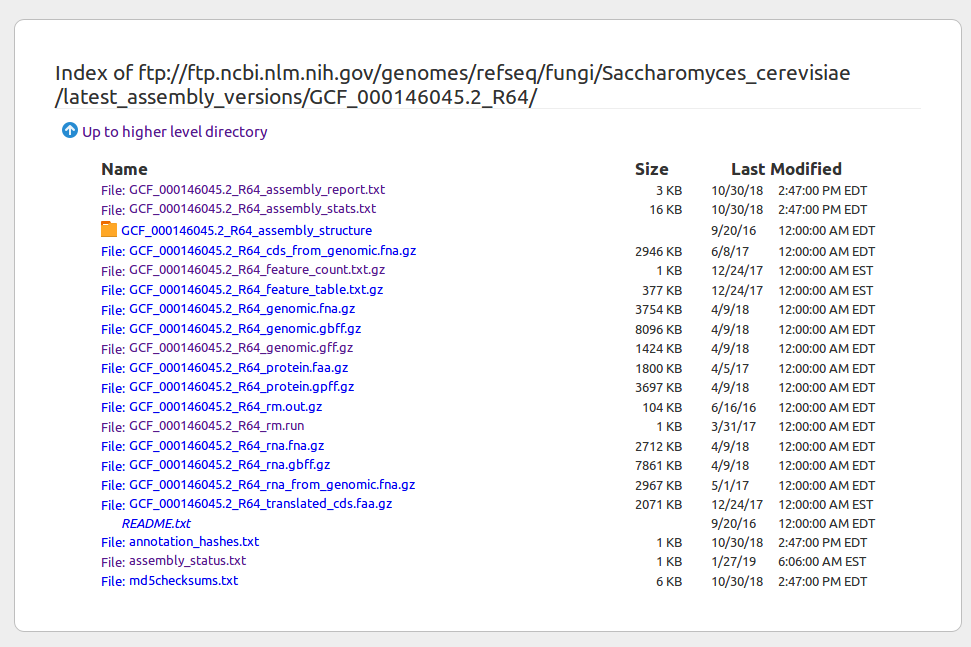
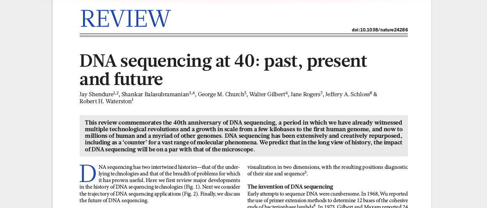
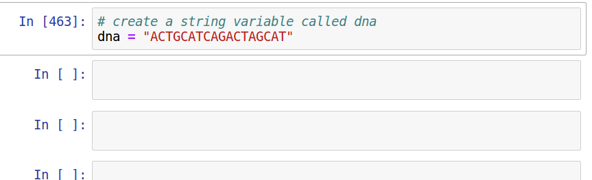

Principles and Applications of Modern
DNA Sequencing
EEEB GU4055
Session 2: Genome Structure
Today's topics
1. Review notebook assignments (bash)
2. Genome annotations (GFF table)
3. Assigned reading (history of genomics)
4. Introduction to Python
Clarification: readings are paired with notebooks
Your assignment for next session is to read a Python tutorial while completing notebooks that introduce Python coding with examples from genomics.
Notebook 1.0: Intro to jupyter
Executing code blocks, editing Markdown, saving notebooks. We covered this in class last time, but has anyone encountered any technical issues?
Interacting with a bash terminal
Lines starting with hash (#) are only comments.
# This is the general format of unix command line tools
$ program -option1 -option2 target
An example command line program:
# e.g., the 'pwd' program with no option or target prints your cur dir
$ pwd
/home/deren/
Interacting with a bash terminal
# The echo command prints text to the screen
$ echo "hello world"
hello world
# The -e option to echo renders special characters
$ echo -e "hello\tworld"
hello world
Executing bash in jupyter
Jupyter notebooks can execute many different computer languages (sometimes requiring add-on installations). By default it supports both Python and bash. You can run a code cell in bash-mode by appending %%bash to the top.
%%bash
echo -e "hello\tworld"
hello world
Errors and Exceptions
When an error is detected the Python interpreter will return a message to the cell output with a hint about the error. For ecample, if we tried to execute bash code in a Python-mode code cell it raises a SyntaxError:
# we forgot to add %%bash to the header of this cell
echo -e "hello\tworld"
File "ipython-input-458-239334a501c4", line 1
echo -e "hello\tworld"
^
SyntaxError: invalid syntax
Notebook 1.1: bash and genomes
Finding genome data online (NCBI example)
Published genomes are organized into a file system on NCBI where the compressed sequence data file, genome annotation file, and other data files are grouped into folders. You can right-click to get the URL of files to download with wget.
# create a new directory to store files in.
mkdir -p genomes/
# the URL link to the genome file, here stored to the variable 'url1'
url1="https://ftp.ncbi.nlm.nih.gov/genomes/refseq/viral/Pandoravirus_quercus/latest_assembly_versions/GCF_003233895.1_ASM323389v1/GCF_003233895.1_ASM323389v1_genomic.fna.gz"
# run the wget program on the url with additional options
wget $url1 -q -O ./genomes/virus.fna.gz
# download GFF (genome feature file) file for Yeast assembly from URL
url2="https://ftp.ncbi.nlm.nih.gov/genomes/refseq/fungi/Saccharomyces_cerevisiae/reference/GCF_000146045.2_R64/GCF_000146045.2_R64_genomic.gff.gz"
wget $url2 -q -O ./genomes/yeast.gff.gz
A reference genome (fasta file format)
>NC_001133.9 Saccharomyces cerevisiae S288C chromosome I, complete sequence
ccacaccacacccacacacccacacaccacaccacacaccacaccacacccacacacacacatCCTAACACTAC
ACAGCCCTAATCTAACCCTGGCCAACCTGTCTCTCAACTTACCCTCCATTACCCTGCCTCCACTCGTTACCCTG
TCAACCATACCACTCCGAACCACCATCCATCCCTCTACTTACTACCACTCACCCACCGTTACCCTCCAATTACC
CAACCCACTGCCACTTACCCTACCATTACCCTACCATCCACCATGACCTACTCACCATACTGTTCTTCTACCCA
TGAAACGCTAACAAATGATCGTAAATAACACACACGTGCTTACCCTACCACTTTATACCACCACCACATGCCAT
CCTCACTTGTATACTGATTTTACGTACGCACACGGATGCTACAGTATATACCATCTCAAACTTACCCTACTCTC
CACTTCACTCCATGGCCCATCTCTCACTGAATCAGTACCAAATGCACTCACATCATTATGCACGGCACTTGCCT
TCTATACCCTGTGCCATTTACCCATAACGCCCATCATTATCCACATTTTGATATCTATATCTCATTCGGCGGTc
attgtataaCTGCCCTTAATACATACGTTATACCACTTTTGCACCATATACTTACCACTCCATTTATATACACT
AATATTACAGAAAAATCCCCACAAAAATCacctaaacataaaaatattctacttttcaacaataataCATAAAC
GCTTGTGGTAGCAACACTATCATGGTATCACTAACGTAAAAGTTCCTCAATATTGCAATTTGCTTGAACGGATG
CAGAATATTTCGTACTTACACAGGCCATACATTAGAATAATATGTCACATCACTGTCGTAACACTCTTTATTCA
AATAATACGGTAGTGGCTCAAACTCATGCGGGTGCTATGATACAATTATATCTTATTTCCATTCCCATATGCTA
ATATCCTAAAAGCATAACTGATGCATCTTTAATCTTGTATGTGACACTACTCATACGAAGGGACTATATCTAGT
GATACTGTGATAGGTACGTTATTTAATAGGATCTATAACGAAATgtcaaataattttacgGTAATATAACTTAT
...
A genome annotation (GFF) tabular file
##gff-version 3
#!gff-spec-version 1.21
#!processor NCBI annotwriter
#!genome-build R64
#!genome-build-accession NCBI_Assembly:GCF_000146045.2
#!annotation-source SGD R64-2-1
##sequence-region NC_001133.9 1 230218
##species https://www.ncbi.nlm.nih.gov/Taxonomy/Browser/wwwtax.cgi?id=559292
NC_001133.9 RefSeq region 1 230218 . + . ID=NC_001133.9:1..230218;Dbxref=taxon:559292;Name=I;chromosome=I;gbkey=Src;genome=chromosome;mol_type=genomic DNA;strain=S288C
NC_001133.9 RefSeq telomere 1 801 . - . ID=id-NC_001133.9:1..801;Dbxref=SGD:S000028862;Note=TEL01L%3B Telomeric region on the left arm of Chromosome I%3B composed of an X element core sequence%2C X element combinatorial repeats%2C and a short terminal stretch of telomeric repeats;gbkey=telomere
NC_001133.9 RefSeq origin_of_replication 707 776 . + . ID=id-NC_001133.9:707..776;Dbxref=SGD:S000121252;Note=ARS102~Autonomously Replicating Sequence;gbkey=rep_origin
NC_001133.9 RefSeq gene 1807 2169 . - . ID=gene-YAL068C;Dbxref=GeneID:851229;Name=PAU8;end_range=2169,.;gbkey=Gene;gene=PAU8;gene_biotype=protein_coding;locus_tag=YAL068C;partial=true;start_range=.,1807
NC_001133.9 RefSeq mRNA 1807 2169 . - . ID=rna-NM_001180043.1;Parent=gene-YAL068C;Dbxref=GeneID:851229,Genbank:NM_001180043.1;Name=NM_001180043.1;end_range=2169,.;gbkey=mRNA;gene=PAU8;locus_tag=YAL068C;partial=true;product=seripauperin PAU8;start_range=.,1807;transcript_id=NM_001180043.1
NC_001133.9 RefSeq exon 1807 2169 . - . ID=exon-NM_001180043.1-1;Parent=rna-NM_001180043.1;Dbxref=GeneID:851229,Genbank:NM_001180043.1;end_range=2169,.;gbkey=mRNA;gene=PAU8;locus_tag=YAL068C;partial=true;product=seripauperin PAU8;start_range=.,1807;transcript_id=NM_001180043.1
...
Reading a (big) genome fasta file
# zcat decompresses and reads the whole file, pipe to head to show only top
$ zcat genomes/virus.fna.gz | head -n 10
>NC_037667.1 Pandoravirus quercus, complete genome
CCGGTACAGTGAGCGGTTCACGGCCTGGCCACGGTCGACGGAGTGCCGTGCGATGCCATCGGCGACGGCCG
CGCGGGCATTCGCACGTGCGACCACAGCCGTCAGTGGTACTGGCGGGACGAGGCCGTCGGGGTGACGGACG
ACCTGCTCGATGCCATCACACGATGCGCCGAGTACGCGCACGATACCATCAGGGCGCCGTTGGCGAGCAAA
GAGATTATGGAGTTCAGCGTCCGTTGCACCCGCCAGGCGGCGGCCGGAGGCGACGACGTCACGGACCCCAT
GGACGCGAGGCCAGGCGCACGTGGCGCGCCTATCGCATGCACGCGCGCGTGTTCAGCGCCATCGCGTTGCT
ACCGCTGAGCATGATGGCGACGGCGGGTCTGCCCTTCTATGACGTGCGCCGGTACGCGCTGGTGGCGGCCC
GCCGCGCCGAACGCGCGTCGAGCCTGCTCCCAACACGCGTGCGACCAGACACCCTTGCGCACGAGGTGATG
...
Reading a tabular genome feature (GFF) file
cut, grep, awk and other bash tools are fast and powerful methods for selecting columns or rows of data tables. We will soon learn to do this more easily in Python.
# read file | exclude lines start w/ # | get cols 1-5 | show first 10 lines
zcat genomes/yeast.gff.gz | grep -v "^#" | cut -f 1-5 | head -n 10
NC_001133.9 RefSeq region 1 230218
NC_001133.9 RefSeq telomere 1 801
NC_001133.9 RefSeq origin_of_replication 707 776
NC_001133.9 RefSeq gene 1807 2169
NC_001133.9 RefSeq mRNA 1807 2169
NC_001133.9 RefSeq exon 1807 2169
NC_001133.9 RefSeq CDS 1807 2169
NC_001133.9 RefSeq gene 2480 2707
NC_001133.9 RefSeq mRNA 2480 2707
...
The GFF file format
We will revisit this file format in association with the next reading assignment; it introduces how genomic features are related (e.g., gene -> mRNA transcript -> exon -> CDS). For now, we are using it to practice reading and parsing a tab-delimited file.
The grep tool
grep is one of the most commonly used bash tools. It can be used like a filter on lines of text to include or exclude them based on their contents. In conjunction with the cut tool, you can select rows (lines) and columns of text in a file.
# pipe zcat output to grep
zcat genomes/yeast.fna.gz | grep ">"
>NC_001133.9 Saccharomyces cerevisiae S288C chromosome I, complete sequence
>NC_001134.8 Saccharomyces cerevisiae S288C chromosome II, complete sequence
>NC_001135.5 Saccharomyces cerevisiae S288C chromosome III, complete sequence
>NC_001136.10 Saccharomyces cerevisiae S288C chromosome IV, complete sequence
>NC_001137.3 Saccharomyces cerevisiae S288C chromosome V, complete sequence
>NC_001138.5 Saccharomyces cerevisiae S288C chromosome VI, complete sequence
>NC_001139.9 Saccharomyces cerevisiae S288C chromosome VII, complete sequence
...
grep and cut to parse tabular data
cut, grep, awk and other bash tools are fast and powerful methods for selecting columns or rows of data tables. We will soon learn to do this more easily in Python.
# read file | exclude lines start w/ # | get cols 1-5 | show first 10 lines
zcat genomes/yeast.gff.gz | grep -v "^#" | cut -f 1-5 | head -n 10
NC_001133.9 RefSeq region 1 230218
NC_001133.9 RefSeq telomere 1 801
NC_001133.9 RefSeq origin_of_replication 707 776
NC_001133.9 RefSeq gene 1807 2169
NC_001133.9 RefSeq mRNA 1807 2169
NC_001133.9 RefSeq exon 1807 2169
NC_001133.9 RefSeq CDS 1807 2169
NC_001133.9 RefSeq gene 2480 2707
NC_001133.9 RefSeq mRNA 2480 2707
...
extracting and counting features
By combining these simple tools we can accomplish complex tasks, like asking 'how many genes does the yeast genome contain?' From studying the GFF format we know that the 3rd column contains feature types. Let's select all rows with the term 'gene' in column 3.
# read file | get 3rd field | grep -w to match word -c to count
zcat genomes/yeast.gff.gz | cut -f 3 | grep -wc "gene"
6427
Challenge from notebook 1.1
Return a tab-delimited table with positions of all telomeres in the Yeast genome. Each line should have the following information: seqid, type, start, stop.
# read file | not lines start w/ # | fields 1,3,4,5 | only w/ 'telomere'
zcat genomes/yeast.gff.gz | \
grep -v "^#" | \
cut -f 1,3-5 | \
grep -w 'telomere'
NC_001133.9 telomere 1 801
NC_001133.9 telomere 229411 230218
NC_001134.8 telomere 1 6608
NC_001134.8 telomere 812379 813184
NC_001135.5 telomere 1 1098
NC_001135.5 telomere 315783 316620
...
Public genome databases
You visited the NCBI FTP site to view published genome files and metadata. You were asked to select any genome in the refseq/ directory to find statistics in the 'assembly_stats.txt' file. Below is an example stats file for Corn (Zea Mays).
# Assembly Statistics Report
# Assembly name: B73 RefGen_v4
# Description: Zm-B73-REFERENCE-GRAMENE-4.0
# Organism name: Zea mays (maize)
# Infraspecific name: cultivar=B73
# Taxid: 4577
# BioSample: SAMN04296295
# BioProject: PRJNA10769
# Submitter: maizesequence
# Date: 2017-02-07
# Assembly type: haploid
# Release type: major
# Assembly level: Chromosome
# Genome representation: full
# WGS project: LPUQ01
# Assembly method: Celera Assembler v. CA 8.3rc2
# Expected final version: yes
# Genome coverage: 65.0x
# Sequencing technology: PacBio
# RefSeq category: Representative Genome
# GenBank assembly accession: GCA_000005005.6
# RefSeq assembly accession: GCF_000005005.2
# RefSeq assembly and GenBank assemblies identical: no
# Reporting on RefSeq assembly.
#
...
# unit-name molecule-name molecule-type/loc sequence-type statistic value
all all all all total-length 2135083061
all all all all spanned-gaps 2191
all all all all unspanned-gaps 331
all all all all region-count 0
all all all all scaffold-count 598
all all all all scaffold-N50 10525104
all all all all scaffold-L50 63
all all all all scaffold-N75 6157474
all all all all scaffold-N90 3037475
all all all all contig-count 2789
all all all all contig-N50 1279870
all all all all contig-L50 506
all all all all total-gap-length 30732878
all all all all molecule-count 12
all all all all top-level-count 267
all all all all component-count 3130
Primary Assembly all all all total-length 2134373047
Primary Assembly all all all ungapped-length 2103640169
Primary Assembly all all all scaffold-count 596
Primary Assembly all all all scaffold-N50 10679170
Primary Assembly all all all spanned-gaps 2191
Primary Assembly all all all unspanned-gaps 331
Primary Assembly all all assembled-molecule total-length 2106338117
Primary Assembly all all assembled-molecule ungapped-length 2075605239
Primary Assembly all all assembled-molecule scaffold-count 341
Primary Assembly all all assembled-molecule scaffold-N50 10692278
Primary Assembly all all assembled-molecule spanned-gaps 2191
Primary Assembly all all assembled-molecule unspanned-gaps 331
Primary Assembly all all unlocalized-scaffold total-length 0
Primary Assembly all all unlocalized-scaffold ungapped-length 0
Primary Assembly all all unlocalized-scaffold scaffold-count 0
Primary Assembly all all unlocalized-scaffold scaffold-N50 0
Primary Assembly all all unlocalized-scaffold spanned-gaps 0
Primary Assembly all all unlocalized-scaffold unspanned-gaps 0
Primary Assembly na na unplaced-scaffold total-length 28034930
Primary Assembly na na unplaced-scaffold ungapped-length 28034930
Primary Assembly na na unplaced-scaffold scaffold-count 255
Primary Assembly na na unplaced-scaffold scaffold-N50 103641
Primary Assembly na na unplaced-scaffold spanned-gaps 0
Primary Assembly na na unplaced-scaffold unspanned-gaps 0
Primary Assembly 1 Chromosome all total-length 307041717
Primary Assembly 1 Chromosome all ungapped-length 303355124
Primary Assembly 1 Chromosome all scaffold-count 44
Primary Assembly 1 Chromosome all scaffold-N50 12677025
Primary Assembly 1 Chromosome all spanned-gaps 305
Primary Assembly 1 Chromosome all unspanned-gaps 43
Assigned reading
Python
Why Python, is it fast, is it easy to learn?
Python
Easy to use, easy to read, extendable (e.g., C++ binding), mature. Python is the glue that binds programs/code/web together.

Interactive Modern Python (IPython)
Although it has been around for decades, Python has exploded in popularity in the last few years owing to its well developed data science libraries and interactive scripting tools. We will be learning modern interactive Python usage.

Assignment
Complete Reading and notebooks for session 2 at https://eaton-lab.org/slides/genomics. Note that the reading is different from that listed in the syllabus. You only need to read chapters 1, 3, and 4.